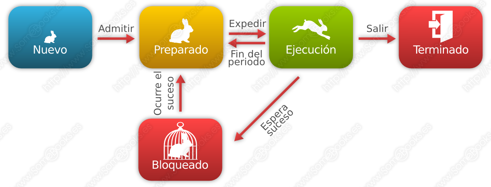
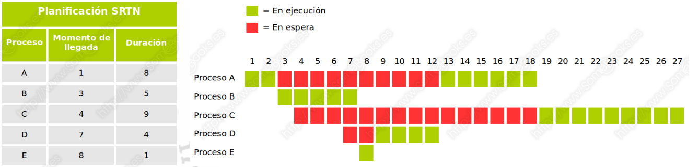
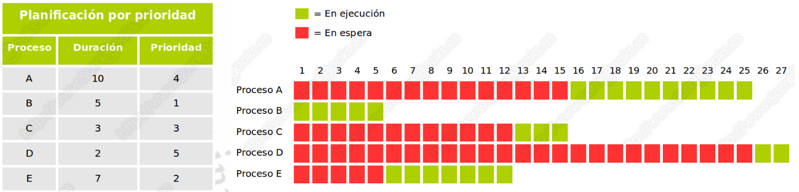
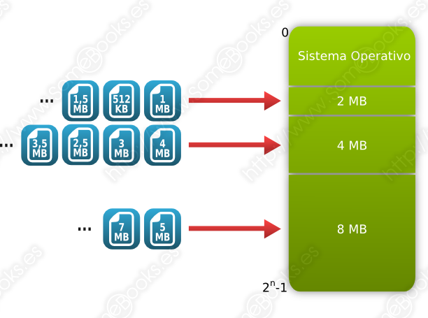
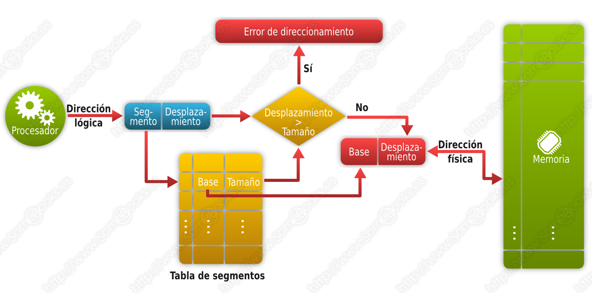
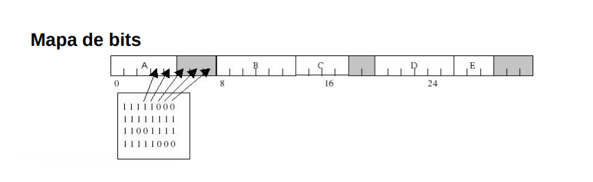
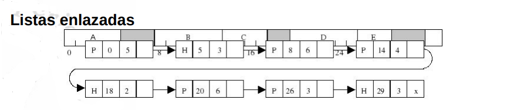
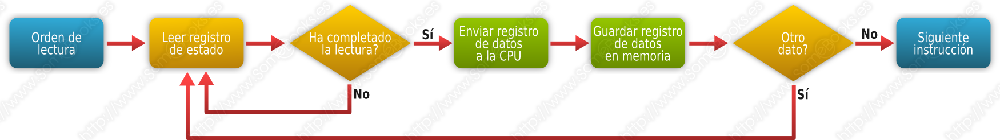
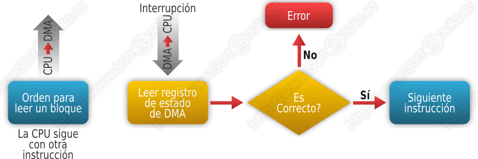
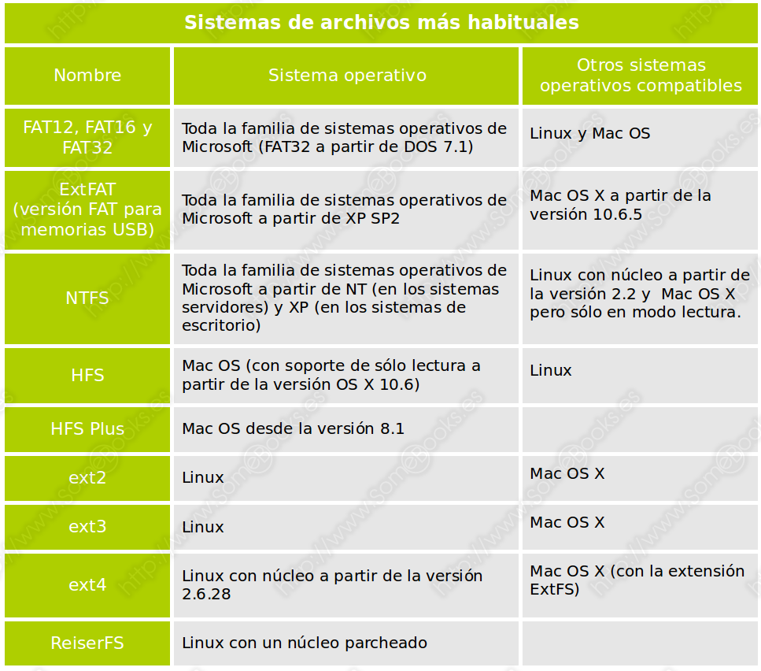

(Actualizado el 24/09/2024)
3. Gestión de Recursos
En este tema veremos en detalle la gestión de recursos que realiza el sistema operativo:
- Gestión del procesador
- Gestión de la memoria
- Gestión de Entrada/Salida
- Gestión de Archivos
3.1. Gestión del Procesador
El elemento del sistema operativo que se encarga de la gestión del procesador es el planificador y sus funciones son:
- Hacer el cambio de estado de los procesos.
- Gestionar la cola de espera de procesos.
- Aplicar los algoritmos de planificación.
- Gestionar el intercambio de datos entre memoria y disco.
Empezamos con el concepto de proceso.
3.1.1. Proceso
La idea fundamental de un sistema informático consiste en un dispositivo que es capaz de ejecutar órdenes agrupadas en forma de programas. Cuando un programa no está en ejecución, no será más que un fichero de datos en un medio de almacenamiento.
En este sentido, podemos entender el concepto de proceso como un programa que se está ejecutando. Sin embargo, una definición más académica sería esta:
- Una unidad de actividad que ejecuta una secuencia ordenada de instrucciones, que dispone de una serie de recursos asignados por el sistema y que se encuentra en un estado particular.
Un programa, entendido como un fichero que contiene órdenes, reside en la memoria secundaria del ordenador, mientras que un proceso reside en la memoria principal. Todo proceso tiene asociado un espacio de direcciones en la memoria principal, donde se guardan las propias instrucciones del proceso y los datos que maneja. Además, el sistema dispondrá de una Tabla de procesos donde guarda la información relevante de cada proceso:
- El identificador del proceso (PID, del inglés, Process IDentifier)
- El estado del proceso, es decir, si está ejecutándose o no.
- Su prioridad respecto a los otros procesos del sistema.
- La posición de memoria donde se encuentra, entre otros.
Los sistemas operativos intentan resolver de la mejor manera posible las siguientes situaciones sobre los procesos:
- Ofrecer a los procesos los recursos que necesitan.
- Repartir el tiempo de ejecución del procesador entre varios procesos, de manera que esté ocupado el mayor tiempo posible y permitiendo que todos ellos tengan un tiempo de respuesta adecuado.
- Facilitar la creación de procesos por parte del usuario y de otros procesos
- Facilitar la comunicación entre diferentes procesos.
3.1.3. Ejecución de un proceso
Importante:
Para que un proceso se ejecute, su secuencia de instrucciones debe encontrarse en la memoria principal.
Además, en todos los sistemas operativos modernos, se va intercalando la ejecución de diferentes procesos, de manera que se alternan el uso del procesador.
- Llamamos multitarea o multiprogramación a la capacidad que tienen los sistemas operativos actuales de alternar el uso del procesador entre diferentes procesos. Dada la velocidad a la que funcionan los procesadores, el usuario tiene la sensación de que los procesos se ejecutan al mismo tiempo.
- Cuando en un sistema informático disponemos de varios procesadores, pueden ejecutarse varios procesos al mismo tiempo. A esta técnica la llamamos multiproceso o multiprocesamiento. Cuando todos los procesadores actúan en igualdad de condiciones, hablamos de multiproceso simétrico o SMP (Symmetric Multi-Processing). Cuando el sistema dispone de procesadores con funciones especializadas, hablamos de multiproceso asimétrico o AMP (Asymmetric Multi-Processing).
3.1.4 Estados de un proceso
- En ejecución: En este estado se encontrará el proceso que ocupa la atención del procesador en ese momento.
- Preparado: En este estado se encuentran los procesos que no se están ejecutando, pero que podrían hacerlo en cualquier momento.
- Bloqueado: En este estado estarán los procesos que han solicitado algún servicio del sistema operativo y están esperando una respuesta.

El procesador ejecuta un código que pertenece a un módulo del sistema operativo, llamado Distribuidor (Dispatcher), cada vez que un proceso haya consumido su tiempo o haya solicitado algún servicio por el que tenga que esperar.
Así se evita que un proceso se apropie del procesador de manera indefinida.
Cada vez que se crea un nuevo proceso, este es situado en estado de Preparado.
Cuando el proceso que se está ejecutando es interrumpido, el Distribuidor elige un nuevo proceso entre los que se encuentran en estado Preparado. El estado del proceso elegido pasa a ser En Ejecución mientras que el proceso que abandona la ejecución pasará a estado Preparado (si ha consumido su tiempo) o Bloqueado (si ha realizado una petición al sistema).
Los procesos que se encuentran en estado Preparado esperan su turno en una cola.
3.1.5 Cambio de contexto
Cuando se ejecuta el módulo del kernel que se encarga de parar la ejecución de un proceso y hacer los cambios necesarios para que se ejecute un proceso diferente, se produce un cambio de contexto, con estas acciones:
- Guarda en la memoria principal el valor de los registros del procesador para el proceso que se estaba ejecutando.
- Recupera el valor de los registros del procesador, desde la memoria principal, para el proceso que toma el relevo. El proceso elegido dependerá del Planificador del sistema operativo.
- Se ejecuta la instrucción indicada en el Contador de Programa, que forma parte del contexto que acabamos de recuperar y, por tanto, será la siguiente del nuevo proceso.
3.1.6. Planificación de procesos
Para que un sistema multiprogramado sea eficaz necesita una Planificación de procesos, ir asignando procesos al procesador a lo largo del tiempo. Objetivos:
- Rendimiento: Trata de maximizar el número de acciones que se completan en un plazo de tiempo determinado.
- Tiempo de respuesta: El sistema debe responder a las solicitudes de los usuarios en un tiempo adecuado.
- Tiempo de retorno: El sistema debe ofrecer resultados de los procesos por lotes en un tiempo adecuado.
- Equidad: Todos los procesos deben ser considerados según sus características.
- Eficiencia: Se debe aspirar a que el procesador esté activo constantemente.
Como cabe esperar, el módulo del sistema operativo que se encarga de esta tarea se denomina Planificador (en inglés, Scheduler).
Según el diseño del sistema operativo, el Planificador utilizará unos criterios u otros para llevar a cabo su tarea. Estos criterios reciben el nombre de Algoritmos de Planificación (o también, Políticas de Planificación).
Veamos a continuación los principales algoritmos de planificación
Nota aclaratoria:
Una política de planificación es no apropiativa (en inglés, non-preemptive) cuando, una vez que un proceso toma el control del procesador, no lo abandona hasta que acaba o hasta que se bloquea. Será apropiativa (en inglés, preemptive) cuando el sistema puede interrumpir el proceso para ejecutar otro diferente.
3.1.7. Algoritmos de planificación
FCFS (First Come First Served)
Es empleado en procesos por lotes (sin intervención del usuario) y es no expulsivo. Los procesos se van poniendo en cola según llegan y se les asigna el estado Preparado. Cuando es asignado al procesador, no lo abandona hasta que acaba. Una de sus ventajas principales consiste en que es un algoritmo muy sencillo de implementar y también es fácilmente predecible. Entre sus principales inconvenientes podemos mencionar que los procesos largos pueden hacer esperar mucho a los procesos cortos FCFS (First Come First Served) Ejemplo práctico en el que disponemos de cinco procesos que se incorporan al sistema en momentos sucesivos y que tienen diferentes tiempos de duración

SJF (Shortest Job First)
Es empleado en procesos por lotes (sin intervención del usuario) y es no expulsivo. Los procesos se van poniendo en cola según llegan y se les asigna el estado Preparado, pero el Planificador elige el que tiene un menor tiempo previsto de ejecución.

SRTF (Shortest Remaining Time First)
SRTF (Shortest Remaining Time First) es un algoritmo empleado en procesos por lotes (sin intervención del usuario) y expulsivo. Los procesos se ponen en cola según llegan y se les asigna el estado Preparado. Sin embargo, el Planificador elige el proceso con el tiempo previsto más corto de ejecución.

RR (Round Robin)
RR (Round Robin) se utiliza en procesos interactivos (donde interviene el usuario) y es expulsivo. Los procesos se ponen en cola según llegan y se les asigna el estado Preparado. El procesador se asigna a cada proceso en orden durante un período de tiempo llamado "Quantum", que es igual para todos los procesos.

Planificación por prioridad
La planificación por prioridad se emplea en procesos interactivos y es expulsiva. Cada proceso recibe un número entero que representa su prioridad, donde un número menor indica una prioridad más alta. Si se considera no apropiativa, funciona como el algoritmo "Primero el más corto" (SJF), pero considera la prioridad en lugar de la duración.

3.1.8. Comunicación entre procesos
Los sistemas operativos a menudo ejecutan varios procesos que deben comunicarse para colaborar en un objetivo común.
Esto se hace mediante funciones llamadas IPC (Inter-Process Communication) que facilitan el envío de mensajes entre procesos y la sincronización.
3.2. Gestión de Memoria
La gestión de memoria en un sistema operativo se refiere a la administración y control de la memoria del sistema. Esto es esencial para garantizar que los programas se ejecuten sin problemas y no haya conflictos en el uso de la memoria. Estos son los conceptos clave:
-
Asignación de Memoria: La gestión de memoria implica asignar espacio de memoria a programas y procesos. Esto se hace para garantizar que cada programa tenga suficiente memoria para funcionar correctamente.
-
Administración del Espacio Libre: El sistema operativo realiza un seguimiento del espacio libre en la memoria para saber dónde cargar nuevos programas o datos.
-
Protección de la Memoria: Para evitar que un programa acceda indebidamente a la memoria de otros programas, se implementan mecanismos de protección.
Hay dos esquemas clave en la gestión de memoria, la paginación y la segmentación, que se utilizan junto con el concepto de memoria virtual.
3.2.1. Gestión de Memoria para un Solo Proceso
Cuando se trata de un solo proceso en ejecución, la gestión de memoria implica asignar y liberar memoria dinámicamente según las necesidades del proceso. Este enfoque se utiliza típicamente en sistemas operativos multitarea, donde varios procesos compiten por la memoria. Los conceptos clave incluyen:
-
Asignación Dinámica: La memoria se asigna al proceso a medida que la necesita. Esto permite un uso eficiente de la memoria, pero requiere una gestión cuidadosa para evitar la fragmentación.
-
Liberación de Memoria: Cuando un proceso ya no necesita memoria, esta se libera y se vuelve a poner a disposición de otros procesos.

3.2.2. Gestión de Memoria con Particiones Fijas
En la gestión de memoria con particiones fijas, la memoria se divide en secciones de tamaño uniforme llamadas particiones. Cada partición se asigna a un proceso en particular. Los aspectos clave son:
-
Asignación de Particiones: Cada proceso se carga en una partición de tamaño predeterminado. Esto puede llevar a un desperdicio de memoria si los procesos tienen diferentes tamaños.
-
Fragmentación Interna: Las particiones pueden tener espacio no utilizado, lo que se conoce como fragmentación interna.

3.2.3. Gestión de Memoria con Particiones Variables
La gestión de memoria con particiones variables permite asignar memoria de manera más flexible, ya que las particiones pueden tener tamaños diferentes según las necesidades de los procesos. Aspectos importantes:
-
Asignación Flexible: Los procesos se asignan a particiones según su tamaño, minimizando la fragmentación interna.
-
Fragmentación Externa: Aunque reduce la fragmentación interna, puede haber fragmentación externa, donde hay suficiente memoria total, pero no se puede asignar a un proceso debido a la distribución de particiones.

Fragmentación
- Fragmentación Externa: Espacio de la memoria que hay fuera de las particiones que no se utiliza.
- Fragmentación Interna: Espacio que hay dentro de las particiones que no se utiliza.
3.2.4. Memoria Virtual
Todos los métodos estudiados hasta el momento suponen que un proceso debe estar completamente cargado en memoria para poder ejecutarse. Sin embargo, el modelo de Memoria virtual aplica los mecanismos de intercambio que ya hemos mencionado para que las partes de un proceso que no estén siendo utilizadas en un momento concreto, puedan residir en memoria secundaria. De esta manera, se libera una mayor cantidad de memoria principal para albergar un número de procesos superior. Además, este planteamiento nos permitiría ejecutar procesos que fueran más grandes que la memoria física.
Cuando el proceso hace referencia a una dirección de memoria que no reside en memoria principal, se produce un fallo de página. En ese momento, el sistema localiza un marco de página libre y carga en él la página necesaria. Si no hubiera marcos libres, habría que aplicar un algoritmo de sustitución para elegir la página de este u otro proceso que debe abandonar la memoria principal para dejar espacio a la que debe cargarse.
Mientras dura toda esta operación, el proceso que originó el fallo de página permanece en estado Bloqueado.
Para saber qué páginas se encuentran en memoria principal y cuáles están en el disco, la tabla de páginas puede incluir un bit de presencia.
Este tipo de esquemas consiguen que la memoria se aproveche mucho mejor. Además, al poder cargar más procesos en la misma cantidad de memoria, el procesador estará mejor aprovechado.
Sin embargo, si se produce una situación que provoque una cantidad elevada de fallos de página, los accesos a disco se multiplicarán y el rendimiento puede caer de forma considerable. Este fenómeno recibe el nombre de hiperpaginación.
3.2.5. Paginación
La paginación divide la memoria en bloques de tamaño fijo llamados "páginas". Cada proceso recibe páginas en la memoria principal según sus necesidades. Esto tiene ventajas, como un uso eficiente de la memoria y una administración más sencilla. Sin embargo, puede haber fragmentación interna y se requiere una tabla de páginas para llevar un registro de las ubicaciones.

Aspectos de los marcos de página
Un aspecto importante es el tamaño de los marcos de página:
Con marcos de página pequeños, hay poca fragmentación interna y tablas de páginas grandes. Con marcos de página grandes, hay más fragmentación interna y tablas de páginas pequeñas.

3.2.6. Segmentación
La segmentación divide la memoria en segmentos lógicos de tamaño variable para reflejar la estructura lógica de un programa. Ofrece flexibilidad, pero puede causar fragmentación externa. Se necesita una tabla de segmentos para rastrear los segmentos en la memoria.
Un programa se considera un conjunto de elementos lógicos de diferentes tamaños.

La segmentación plantea que, al compilar un programa, este se convierta en un conjunto de segmentos a los que se les asignará un identificador, un punto de inicio y un tamaño.

3.2.7. Paginación + Segmentación
Cuando los segmentos son grandes, es común utilizar una combinación de paginación y segmentación. La idea es dividir cada segmento en páginas de longitud fija para su ubicación en la memoria.
3.2.8. Control del uso de memoria
Para gestionar el uso de la memoria, existen dos enfoques generales:
Mapas de bits Los mapas de bits dividen la memoria en unidades de asignación, que pueden ser desde unas pocas palabras hasta varios kilobytes. A cada unidad de asignación le corresponde un bit del mapa de bits. El bit es 0 si la unidad de asignación está libre y 1 si está ocupada (o viceversa).
Un mapa de bits proporciona una manera sencilla de llevar el control de las palabras de memoria utilizando una cantidad de memoria fija porque su tamaño solo depende del tamaño de la memoria y del tamaño de la unidad de asignación. El principal problema es que, una vez que se ha decidido llevar a la memoria un proceso de k unidades, el gestor de memoria debe examinar el mapa de bits en busca de una secuencia de k bits a 0 consecutivos. Buscar en el mapa una secuencia de una cierta longitud es una operación lenta (porque la secuencia en el mapa puede cruzar fronteras de palabras); este es un argumento en contra del uso de mapas de bits.

Listas enlazadas
Otra forma de llevar el control de la memoria es mantener una lista enlazada de bloques de memoria asignados y libres, donde cada bloque es un proceso o un hueco entre dos procesos.
La memoria se representa como una lista enlazada. Cada nodo de la lista representa un bloque, especificando el tipo de bloque [hueco (H) o proceso (P)], su dirección de inicio, su longitud y un puntero al siguiente nodo.
Las listas enlazadas mantienen registros de bloques de memoria asignados y libres, donde cada bloque representa un proceso o un espacio vacío entre procesos.

3.3. Gestión de E/S
El sistema operativo debe controlar los dispositivos, detectar interrupciones y manejar errores. También debe proporcionar una interfaz entre los periféricos y el resto del sistema, intentando que su uso sea lo más estándar posible.
En un sistema informático moderno podemos encontrar muchos dispositivos de entrada/salida diferentes. Sin embargo, uno de los objetivos del diseño de un sistema operativo es que el usuario o el programador los perciban de una forma semejante, sin importar los detalles técnicos que los distinguen ni las diferencias en la complejidad del dispositivo.
3.3.1. Técnicas de gestión de E/S
Un ordenador puede utilizar diferentes técnicas para interactuar con los controladores de entrada/salida. Como ya mencionamos en el apartado anterior, mencionaremos las más representativas de menor a mayor sofisticación:
Entrada/salida programada: El procesador ejecuta una instrucción de un proceso que solicita una operación de entrada/salida. Se realiza el requerimiento al módulo de entrada/salida correspondiente, y queda en espera de recibir la respuesta.

Entrada/salida controlada por interrupciones: El procesador ejecuta una instrucción de un proceso que solicita una operación de entrada/salida. Entonces, el proceso espera en estado Bloqueado y el procesador continúa con la ejecución de otras instrucciones. Cuando se completa la operación, el módulo de entrada/salida genera una interrupción para el procesador y este ejecuta el módulo del sistema operativo que pone al proceso en estado Listo.

Acceso directo a memoria (DMA, de las siglas en inglés Direct Memory Access): El equipo dispone de un módulo DMA autorizado para acceder directamente a la memoria RAM. De esta manera, en lugar de encargarse el procesador de controlar cada operación individual de entrada o salida, se confía en el módulo DMA para que ejecute varias operaciones consecutivas, colocando (o obteniendo) la información directamente en la memoria RAM. El módulo DMA interrumpe al procesador solo cuando han terminado todas las operaciones que tenía encargadas. 
Procesadores de entrada/salida (IOP): El equipo dispone de un procesador complementario con la capacidad de ejecutar las operaciones de entrada/salida, obteniéndolas directamente de la memoria principal. También puede utilizar técnicas de DMA para leer o escribir los datos en la memoria. De esta forma, el procesador principal queda liberado de este tipo de operaciones.

3.3.2. Almacenamiento intermedio
Cuando es necesario leer un gran volumen de datos del almacenamiento secundario, el proceso irá emitiendo solicitudes de bloques de manera consecutiva, que irá procesando uno a uno. Como el almacenamiento secundario es mucho más lento, entre una lectura y otra el proceso, probablemente, permanecerá en estado Bloqueado. Una vez completada la lectura, tendrá que esperar en la cola de procesos en estado Listo hasta que el Planificador lo seleccione para su ejecución.
Para evitar esta situación, se utiliza una técnica denominada buffering, que consiste en que el sistema operativo realice las lecturas antes de que se produzca la solicitud, almacenándolas en un área de la memoria principal llamada Buffer.
Algo similar puede hacerse cuando disponemos de dispositivos muy lentos que, sin embargo, pueden recibir grandes volúmenes de datos. En estos casos, puede utilizarse una memoria intermedia situada en un almacenamiento externo (típicamente, un disco) y enviar los datos poco a poco al dispositivo externo.
Esta técnica, aunque es similar al buffering, recibe el nombre de spooling, y la memoria intermedia se denomina spool (del inglés Simultaneous Peripheral Operations On-Line). Es una técnica que se utiliza habitualmente con impresoras.
3.4. Gestión de Archivos
El sistema operativo es responsable de las siguientes actividades relacionadas con la gestión de discos:
Creación y administración de la estructura lógica (Sistema de archivos). Administración del espacio libre. Asignación de almacenamiento. Planificación del disco: Decidir a qué proceso se le da servicio de disco. El Sistema de archivos (en inglés, filesystem) es el componente del sistema operativo encargado de organizar la manera en que se guardan los datos dentro de los dispositivos de almacenamiento secundario. Para llevar a cabo su tarea, desde un punto de vista lógico utiliza dos conceptos diferentes:
Archivo (o fichero): es una serie de bytes almacenados en un dispositivo de almacenamiento externo que, en conjunto, forman una unidad lógica. Cada archivo suele estar identificado en el sistema mediante un nombre y una extensión. Normalmente, el nombre sirve para identificar el contenido del archivo y la extensión para identificar el tipo al que pertenece. Carpeta (o directorio): es una forma de agrupar archivos, según el criterio del usuario, para facilitar su organización. Al igual que los archivos, las carpetas tienen un nombre que las identifica. Para un sistema de archivos, una carpeta no es más que un archivo que contiene información sobre la forma en que se organizan los datos. Como en el caso de los archivos, para evitar ambigüedades, no puede haber dos carpetas con el mismo nombre en la misma ubicación. Como podemos suponer, la unidad de información con la que trabaja un sistema de archivos es, precisamente, el archivo.
Es frecuente que cada familia de sistemas operativos tenga su propio sistema de archivos, aunque hoy en día la mayoría de ellos son compatibles con los sistemas de archivos más utilizados.

Un sistema de archivos se encargará de aspectos como:
- Organizar de manera lógica los sectores del dispositivo para constituir archivos y directorios.
- Asignar espacio de almacenamiento a los archivos y mantener el control sobre los sectores que pertenecen a cada archivo.
- Ofrecer los mecanismos que permitan crear nuevos archivos, cambiarles el nombre y/o la ubicación, modificar su contenido o eliminarlos.
- Mantener la estructura jerárquica del sistema de directorios.
- Controlar el acceso seguro a los archivos, es decir, que solo puedan acceder a los datos los usuarios autorizados.
- Controlar qué sectores permanecen disponibles para ser ocupados en cualquier momento.
3.4.1. Atributos y permisos
El sistema operativo debe tener la capacidad de controlar qué usuario puede acceder a cada uno de sus recursos (directorios, impresoras, conexiones de red, etc.). Para lograrlo, cada uno de estos recursos suele tener asociada una Lista de Control de Acceso o ACL (del inglés, Access Control List), en la cual se relacionan los diferentes usuarios que pueden acceder y bajo qué condiciones (lectura, escritura, ejecución, etc.).
Por otro lado, un determinado archivo puede tener asociados diferentes atributos que informan sobre ciertas características del archivo o sobre la manera en que el sistema operativo debe tratarlo. Así, un archivo puede tener atributos como: directorio, oculto, de sistema, cifrado, etc.
3.4.2. Organización del sistema de archivos
Hoy en día, prácticamente todos los sistemas de archivos que podemos encontrar organizan los archivos de manera jerárquica, permitiendo la creación de un árbol de directorios que facilita la organización y clasificación de su contenido.
Además, para evitar ambigüedades, los sistemas operativos no permiten que, dentro del mismo directorio, existan dos archivos con el mismo nombre.
3.4.3. Rutas
Para expresar la ubicación exacta de un archivo o un directorio se utiliza su ruta (path en inglés). Aunque la forma de expresar una ruta puede cambiar según el sistema operativo que estemos utilizando, en general, se forman indicando la lista jerárquica de directorios que representa el camino que debemos recorrer para llegar hasta un archivo o directorio. En esa relación, el último elemento será el propio archivo o directorio referenciado.
Al escribir una ruta, debemos utilizar un carácter que separe cada elemento del siguiente. Este carácter separador suele ser una barra invertida () en los sistemas Microsoft y una barra inclinada (/) en la familia de sistemas Unix, como es el caso de GNU/Linux.
Otros caracteres especiales que podemos utilizar en una ruta son los siguientes:
- . (un punto): Hace referencia al directorio en el que nos encontramos (también llamado directorio actual).
- .. (dos puntos): Hace referencia al directorio que se encuentra, jerárquicamente, justo por encima del directorio en el que nos encontramos (también llamado directorio padre).
- ~ (una virgulilla): En sistemas de la familia Unix, como GNU/Linux, hace referencia al directorio personal del usuario que escribe la ruta.
Existen dos formas diferentes de escribir rutas:
- De manera absoluta: Una ruta de este tipo hará referencia a un archivo o directorio a partir del directorio raíz.
- En los sistemas de la familia Unix, una ruta absoluta comienza por una barra inclinada. Por ejemplo:
- /home/Alicia/Documentos/informe.odt
- En los sistemas Microsoft, es necesario comenzar la ruta absoluta con la letra de unidad a la que hace referencia, seguida de dos puntos y una barra invertida. Por ejemplo:
- c:\Usuarios\Alicia\Documentos\informe.odt
- En los sistemas de la familia Unix, una ruta absoluta comienza por una barra inclinada. Por ejemplo:
- De manera relativa: Una ruta de este tipo hará referencia a un archivo o directorio tomando como punto de partida el directorio en el que nos encontramos. Por ejemplo:
- ../../Jacinto/Documents/memoria.odt
- (como se puede apreciar, el ejemplo es válido en sistemas de la familia Unix, pero bastaría con cambiar el sentido de las barras para que fuera válido en sistemas Microsoft).